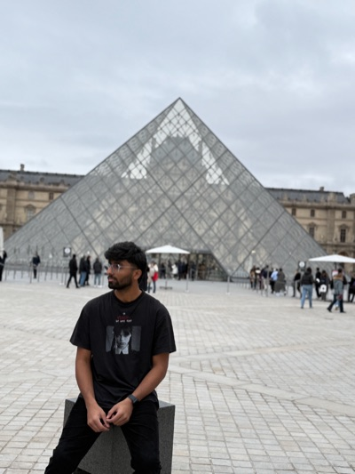
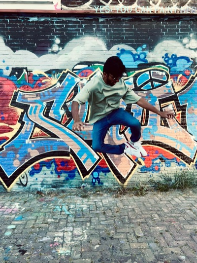
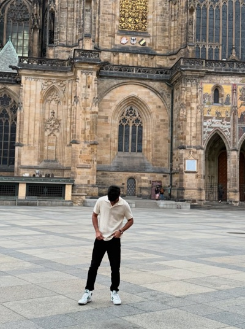
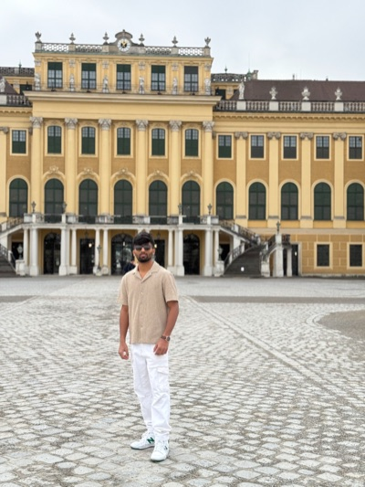
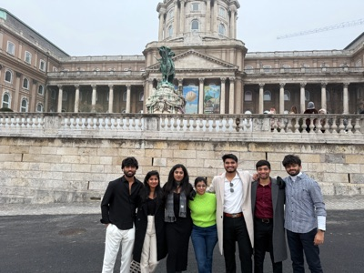
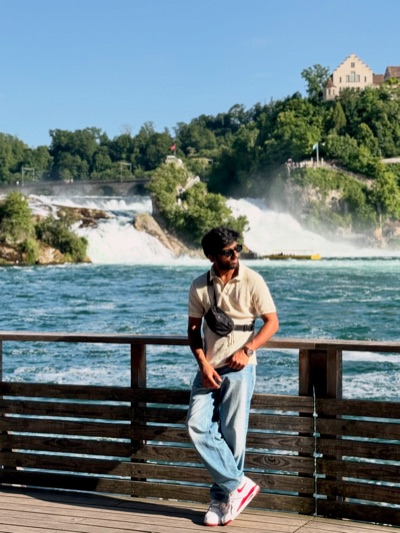

Every big story begins with a dream. In 2023, I left Bengaluru with a suitcase full of hopes and the courage to start a new chapter in Germany. My flight to Germany was the first step toward the future I had imagined. The journey is still unfolding.





